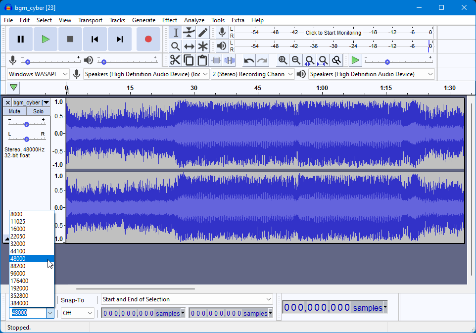

Audio
Programs
Requirements
Optional
Music Modding
Creating a lopus file
- Make sure your music file is a WAV file with a sample rate of 48000hz
- If you're not sure/want to make sure 100% it is, then import your wav into Audacity and set the
Project Rate at the bottom left to 48000 then export it to wav

- Select two regions in your song and note down the start and end samples if you want your song to loop
- Now open up a command prompt instance in the folder with VGAudioCli and run the following command (replace the brackets with the respective information)
dotnet VGAudioCli.dll -i <input path> -o <output name>.lopus -l <loop start>-<loop end> --bitrate 64000 --CBR --opusheader namco

- Afterwards you should have a lopus file.
Creating a nus3audio file
Using nus3audio-rs
- Open up a command prompt instance in the folder with the nus3audio program and run the following command (replace the brackets with the respective information)
nus3audio -n -A <whatever_you_want> <lopus path> -w <output name>.nus3audio
- You're now done with the nus3audio. Move on to
Loading the nus3audio in-game
Using NUS3Audio Editor
- Open a pre-existing nus3audio file (either from the data.arc or a pre-existing mod)
- Click the first entry in there and press
Replace
- Select the lopus file
- Save the file
- You're now done with the nus3audio. Move on to
Loading the nus3audio in-game
Using simple-nus3audio-gui
- Click
File -> New
- Click
Edit -> Add Sound
- Click the first entry and then
Edit -> Sound Properties
- Select
LOPUS format
- Enable
Loop Audio
- Set
Loop from to your start loop sample & Loop to to your loop end sample
- Hit
Ok
- Click
Edit -> Replace Single Sound and select your lopus file
- Click
File -> Save nus3audio and save it
- You're now done with the nus3audio. Move on to
Loading the nus3audio in-game
- Open a pre-existing nus3audio file (either from the data.arc or a pre-existing mod)
- Click
Choose File on the first entry
- Select the lopus file
- Save the file
- You're now done with the nus3audio. Move on to
Loading the nus3audio in-game
Voices/SFX Modding
Creating a idsp file
- Make sure your music file is a WAV file with any sample rate
- If you're not sure/want to make sure 100% it is, then import your wav into Audacity and set the
Project Rate to anything you want (I recommend 44100hz)
- Now open up a command prompt instance in the folder with VGAudioCli and run the following command (replace the brackets with the respective information)
dotnet VGAudioCli.dll -i <input path> -o <output name>.idsp
- Afterwards you should have a idsp file.
Modifying a nus3audio file
Using nus3audio-rs
- Open up a command prompt instance in the folder with the nus3audio program and run the following command (replace the brackets with the respective information)
nus3audio <nus3audio path> -v
- Press
e and hit enter
- Type the id of the entry you want to replace and hit enter
- Press
d and hit enter
- Enter the idsp path you want to replace it with and hit enter
- Press
q and hit enter
- Repeat 2-6 for each entry you want to edit
- Press
w and hit enter
- Enter
<nus3audio name>.nus3audio and hit enter
- Press
q and hit enter
- You're now done with the nus3audio. Move on to
Loading the nus3audio in-game
Using NUS3Audio Editor
- Open the nus3audio file you want to edit
- Click the entry you want to replace and press
Replace
- Select the idsp file you want to replace it with
- Repeat 2-3 for each entry you want to edit
- Save the file
- You're now done with the nus3audio. Move on to
Loading the nus3audio in-game
Using simple-nus3audio-gui
- Open the nus3audio file you want to edit
- Select the entry you want to edit
- Click
Edit -> Replace Single Sound or press Ctrl + R
- Select the idsp file you want to replace it with
- Repeat 2-4 for each entry you want to edit
- Save the file
- You're now done with the nus3audio. Move on to
Loading the nus3audio in-game
- Open the nus3audio file you want to edit
- Click
Choose File for the entry you want to edit
- Select the idsp file you want to replace it with
- Repeat 2-3 for each entry you want to edit
- Save the file
- You're now done with the nus3audio. Move on to
Loading the nus3audio in-game
Loading the nus3audio in-game
- Make sure you have ARCropolis set up properly and working
- Create a folder in
sd:/ultimate/mods with any folder name (I recommend naming it something related to what the mod does)
- Inside that folder, replicate the ARC path of the file you want to replace (make sure you replace
: with ;)
- Launch the game and make sure the mod is enabled and it should work!
Format: sd:/ultimate/mods/<Mod Folder Name>/<ARC path>
Examples:
sd:/ultimate/mods/My Cool Music Mods/stream;/sound/bgm/bgm_crs01_menu.nus3audio
sd:/ultimate/mods/Super Cool Sonic Voice Mod/sound/bank/fighter_voice/vc_sonic.nus3audio